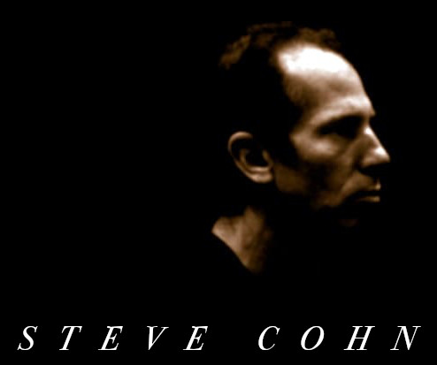

The music of Steve Cohn has continually and dramatically evolved. A native of San Francisco, he performed
as a blues pianist in Los Angeles, where he began studying the shakuhachi flute at UCLA.
He then spent two years in Japan, returned to study at San Francisco State University where he graduated
with a degree in classical piano performance, and also appeared as a jazz pianist in the bands of Eddie
Henderson, Sonny Simmons, and others.
Ultimately, he moved to New York where he has devoted himself to improvised music,
combining a unique piano style with non-Western winds and percussion.
Cohn has performed and recorded with musicians including Reggie Workman, Barry Altschul, Oliver Lake,
Fred Hopkins, Bruce Ditmas, Denis Charles, William Parker, Bob Stewart, Frank Lowe, Karl Berger,
Jason Kao Hwang, Tom Varner, and Steve Lacy, among many others.
He has performed his own works in venues including New York City’s Miller Theatre,
Roulette, the Newport JVC Festival, Sweet Basil, Issue Project Room, Yoshi's, The Great American Music Hall, World Shakuhachi
Festival, and the Ottawa Festival. Two of his recordings, Sufi Dancers and Ittekimasu, received four-star ratings in Downbeat Magazine and placed on the list of top ten releases in Cadence Magazine.
He has also appeared in multimedia performances with Japanese Taiko drummers and the Elinor Coleman Dance Ensemble, and was commissioned to compose and perform an original work that premiered with the Watanabe Dance Company in Japan. He has conducted masterclasses (including the Paris National Conservatory) and has received grants from Arts International, Meet the Composer, and the New Jersey State Council on the Arts.